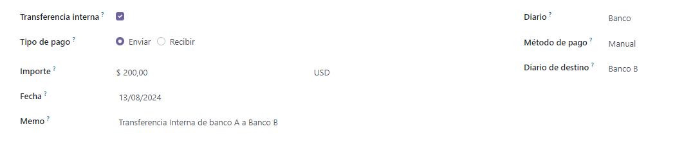
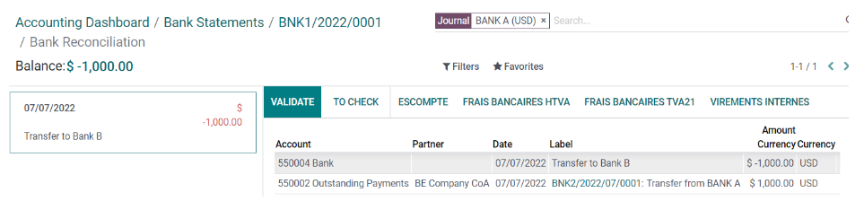

Transferencias internas¶
En Odoo, las transferencias internas de dinero se pueden realizar con unos pocos clics. Necesita al menos dos cuentas bancarias, dos diarios de efectivo o una cuenta bancaria y un diario de efectivo.
Configuración¶
Una cuenta de transferencia interna se crea de manera automática en su base de datos en función de la localización de su empresa y de la legislación de su país. Si es necesario, la cuenta predeterminada de Transferencia interna se puede modificar yendo a la:menuselection:Aplicación Contabilidad --> Configuración --> Configuración y luego en la sección de Cuentas predeterminadas.
Nota
Necesita al menos dos cuentas bancarias para realizar transferencias internas. Puede ir a la sección de cuentas de efectivo y bancarias para ver cómo agregar una cuenta bancaria adicional a su base de datos.
Registrar una transferencia interna de un banco a otro¶
Supongamos que tiene dos cuentas bancarias registradas en su base de datos y desea transferir 1,000 USD del Banco A al Banco B.
Iniciar una transferencia interna¶
Desde el Panel de control de contabilidad, haga clic en el botón de selección desplegable (⋮) en uno de sus bancos. En la columna Nuevo, seleccione Transferencia interna e ingrese la información relacionada con la transferencia.
Nota
Completae el campo de Memo para una conciliación automática.
Haga clic en Guardar y Confirmar para registrar su transferencia interna. El dinero ahora se registra en la cuenta de transferencia y se crea otro pago automáticamente en el diario de destino (Banco B).
Diario bancario (Banco A)¶
Cuenta |
Debe |
Haber |
|---|---|---|
Cuenta de pagos pendientes |
$1,000 |
|
Cuenta de transferencia interna |
$1,000 |
Asiento automatizado: Diario bancario (BANCO B)¶
Cuenta |
Debe |
Haber |
|---|---|---|
Cuenta de cobros pendientes |
$1,000 |
|
Cuenta de transferencia interna |
$1,000 |
Nota
Hay un pago pendiente y un cobro pendiente en los dos diarios de cuentas bancarias, porque aún no se ha registrado el extracto bancario que confirma el envío y la recepción del dinero.
Gestione y concilie los extractos bancarios¶
El siguiente paso es registrar los extractos bancarios para finalizar la transacción mediante la creación, importación o sincronización de sus Líneas de transacción. Complete el Saldo final y haga clic en el botón Conciliar.

Ver también
En la siguiente ventana, elija los valores correspondientes para el pago, en este ejemplo, la cuenta de pagos pendientes, y luego haga clic en «Validar».
Entrada de diario bancario¶
Cuenta |
Debe |
Haber |
|---|---|---|
Pago pendiente |
$1,000 |
|
Cuenta bancaria (BANK A) |
$1,000 |
Debe repetir los mismos pasos una vez que reciba el extracto bancario relacionado con el Banco B. Registre y concilie las líneas de su extracto bancario.
Entrada de diario bancario¶
Cuenta |
Debe |
Haber |
|---|---|---|
Recibo pendiente |
$1,000 |
|
Cuenta bancaria (BANK B) |
$1,000 |